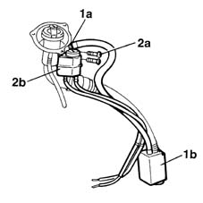

1080E10 tank fuel vapour separator - r + r
- Path
- Procedures > 10 ENGINE UNIT > 1080 EXHAUST EMISSION CONTROL SYSTEM > 1080E evaporation control system > 1080E10 tank fuel vapour separator - r + r
- Kind
- repair procedure (removal / refitting; the operation number is the code)
- Applies to
- engines: 1.6 16v; all production periods
- Interactive page
- https://sloeber94.github.io/elrnDB-fMltpl/en/#/2891306
Applies to: engines: 1.6 16v; all production periods
 Removing
Removing
 Refitting
RefittingWith the ignition key in the OFF position, disconnect the battery negative terminal.
 | Name | Connector |
|---|---|---|
- | Battery |
Place the car on a ramp.
1040A30 fuel filler pipe - r + r
1. Break collars (1a) and remove supplementary fuel vapour separator (1b).
2. Unscrew retaining bolts (2a) and remove fuel vapour separator (2b) from the filler pipe.

Applies to: engines: 1.6 16v; all production periods
Refitting
RemovingFit the vapour separator and secure to the filler pipe using the retaining bolts.
Collect the pipe to the auxiliary vapour separator and secure to the fuel filler pipe.
1040A30 fuel filler pipe - r + r
Remove the vehicle from the ramp.
With the ignition key in off position, connect the battery negative terminal.
| Name | Connector |
|---|---|---|
- | Battery |